ВЕДОМСТВЕННЫЕ СТРОИТЕЛЬНЫЕ НОРМЫ
ИНСТРУКЦИЯ
ПО ОПРЕДЕЛЕНИЮ ГРУЗОПОДЪЕМНОСТИ СТАЛЕЖЕЛЕЗОБЕТОННЫХ БАЛОЧНЫХ ПРОЛЕТНЫХ СТРОЕНИЙ
АВТОДОРОЖНЫХ МОСТОВ
ВСН 36-84
Миндорстрой БССР
МИНИСТЕРСТВО СТРОИТЕЛЬСТВА И ЭКСПЛУАТАЦИИ
АВТОМОБИЛЬНЫХ ДОРОГ БЕЛОРУССКОЙ ССР
Минск 1984
|
Министерство строительства и эксплуатации
автомобильных дорог БССР |
Ведомственные строительные нормы |
ВСН 36-84 Миндорстрой БССР |
|
Инструкция по определению грузоподъемности сталежелезобетонных балочных пролетных строений автодорожных мостов |
Вводится впервые |
Настоящие нормы устанавливают правила определения грузоподъемности сталежелезобетонных балочных пролетных строений автодорожных мостов относительно нормативных временных подвижных нагрузок, а также конкретных тяжеловесных транспортных средств.
Нормы не распространяются на сквозные пролетные строения с верхним или нижним поясами, объединенными с железобетонной плитой.
Нормы обязательны для всех организаций, осуществляющих определение грузоподъемности мостов, состоящих на балансе Миндорстроя БССР. При этом все работы по определению грузоподъемности должны выполнять подразделения, имеющие в своем составе инженерно-технический персонал из числа инженеров-мостовиков.
1.1. Грузоподъемность пролетного строения при пропуске колонн автомобильной эксплуатационной нагрузки определяется как допустимый класс [К] нормативной нагрузки АК, схема, параметры и правила продольной и поперечной установки которой приведены в СНиП 2.05.03-84.
При этом в составе колонн
пропускают машины массой до 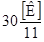
Одновременно для мостов, построенных под нагрузку Н-30 при пропуске колонн автомобильной нагрузки допускается определять грузоподъемность, используя в качестве эталона нагрузку Н-30, вычисляя коэффициент надежности по нагрузке для нее по формуле:
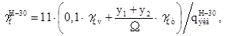
где γf,v; γf,т - коэффициенты надежности для распределенной части и тележки нагрузки АК; Ω - площадь линии влияния; y1 и y2 - ординаты линии влияния под осями тележки АК; qH-30экв - эквивалентная нагрузка для колонны Н-30.
Грузоподъемность пролетного строения при пропуске одиночных машин, весовые и геометрические параметры которых не отличаются от машин для нормативной нагрузки НК-80 (или НГ-60 - для гусеничных машин) в сторону увеличения воздействия на сооружение, определяется как допустимая масса [G]к нормативной нагрузки НК-80 для колесных машин и как допустимая масса [G]г нормативной нагрузки НГ-60 для гусеничных машин. Схемы, параметры и правила продольной и поперечной установки этих нагрузок применяют в соответствии со СНиП 2.05.03-84.
Грузоподъемность пролетного строения при пропуске конкретного тяжеловесного транспортного средства, хотя бы один из весовых или геометрических параметров которого отличается от машин для нормативной нагрузки НК-80 (или НГ-60 - для гусеничных машин) в сторону увеличения воздействия на сооружение, определяется как допустимая масса [G]T тяжеловеса. При этом в расчетах используют схему транспортного средства с действительным расположением осей, колес, давлениями на каждую ось.
1.2. Грузоподъемность пролетного строения по п. 1.1 определяется из условий достижения допустимых значений усилий и напряжений от подвижных расчетных нагрузок в расчетных сечениях основных несущих элементов пролетного строения, т.е. из неравенств:
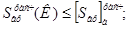 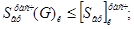
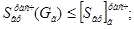 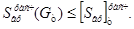
Грузоподъемность пролетного строения принимается по грузоподъемности наиболее слабого несущего элемента. Нагрузка от толпы на тротуарах принимается по СНиП 2.05.03-84 только в сочетании с автомобильной нагрузкой.
Грузоподъемность пролетного строения устанавливается для двух режимов эксплуатации: контролируемого и неконтролируемого.
Под неконтролируемым следует понимать обычные условия эксплуатации, при которых состояние мостового полотна регламентируется соответствующими техническими правилами ремонта и содержания автомобильных дорог, а пропуск нагрузок - дорожными знаками.
В этом случае коэффициенты надежности по нагрузке, сочетаний нагрузок, а также динамические коэффициенты принимаются по проектно-исполнительной документации.
При контролируемом режиме осуществляется контроль либо только за весовыми параметрами элементов мостового полотна, либо только за весовыми и геометрическими параметрами тяжеловесных транспортных средств, либо за теми и другими параметрами одновременно.
В первом и третьем случаях коэффициент надежности по нагрузке от массы слоев покрытия проезжей части допускается принимать равным 1,1 при условии, что измерение этих слоев произведено не менее, чем в трех поперечниках на каждом пролете, и не менее, чем в трех местах на каждом поперечнике. Производить ремонт мостового полотна путем устройства нового дополнительного слоя покрытия и новых элементов ограждений или их замены на более тяжелые запрещается.
Во втором и третьем случаях для конкретных тяжеловесных транспортных средств, параметры которых отличаются от машин для нормативной нагрузки НК-80 (или НГ-60 - для гусеничных машин) в сторону увеличения воздействия на сооружение, допускается принимать динамический коэффициент для подрессоренного транспорта равным 1,0 при наличии ровного, без выбоин и наледей покрытия (в противном случае его следует принимать по СНиП 2.05.03-84 как для одиночной нагрузки); весовые параметры нагрузки принимать по результатам взвешивания и документальным данным с коэффициентом надежности по нагрузке 1,0.
1.1, 1.2. (Новая редакция, Изм. № 1).
|
Внесены |
Утверждены |
Срок введения в действие |
1.3. Установленная грузоподъемность с указаниями по режиму эксплуатации заносится в карточку искусственного сооружения.
1.4. При определении возможности пропуска по пролетному строению тяжеловесного транспортного сродства, как правило, следует применять контролируемый режим эксплуатации.
1.5. Определение грузоподъемности включает:
а) обследование сооружения согласно «Инструкции по обследованию и испытаниям мостов и труб» ВСН 122-65 Минтрансстроя СССР;
б) определение расчетных сопротивлений;
в) назначение расчетных сечений в несущих элементах сооружения и расчетных точек, определение в них усилий и напряжений от расчетных постоянных нагрузок, включая регулирование, определение изменений этих усилий от ползучести бетона и податливости поперечных швов (в случае сборной железобетонной плиты);
г) определение в расчетных
сечениях несущих элементов допустимых* усилий 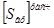 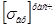
_____________
* Максимальные усилия и напряжения от временных подвижных расчетных нагрузок, которые могут быть допущены по условиям прочности, выносливости и устойчивости с учетом остальных воздействий и нагрузок основного сочетания.
д) испытания пролетного строения;
е) определение грузоподъемности пролетного строения по п. 1.1;
(Новая редакция, Изм. № 1).
ж) (Исключен. Изм. № 1).
1.6. Допустимые усилия и напряжения (п. 1.5, г) определяются в соответствии с разделом 4, усилия от временных подвижных расчетных нагрузок - разделом 5.
Испытания пролетного строения производятся по указаниям раздела 6.
1.8. Расчет грузоподъемности несущих элементов пролетного строения следует производить с учетом действительных размеров элементов и физико-механических характеристик стали и бетона, действительного распределения усилий между элементами от постоянных и временных нагрузок, дефектов, влияющих на грузоподъемность.
1.9. Ползучесть бетона и податливость поперечных швов сборной железобетонной плиты учитываются в соответствии с СНиП 2.05.03-84, а дефекты, влияющие на грузоподъемность, - в соответствии с разделом 3 (табл. 1).
(Измененная редакция, Изм. № 1).
1.10. Расчет соединений и сопряжений допускается не производить, если в них отсутствуют дефекты, снижающие их несущую способность.
В расчетах на поперечную силу допускается не производить проверку середины пролета балок и плит, если в этих сечениях отсутствуют дефекты.
1.11. Расчет грузоподъемности железобетонной плиты проезжей части на местную нагрузку производится согласно «Инструкции по определению грузоподъемности железобетонных балочных пролетных строений автодорожных мостов» ВСН 32-78 Минавтодора РСФСР.
При разовом пропуске тяжеловесного транспортного средства для расчета плиты допускается применение метода предельного равновесия.
1.12. Расчет грузоподъемности производится по основному сочетанию нагрузок. Допускается не производить расчетов на выносливость и жесткость металлических элементов, а железобетонных - на трещиностойкость при разовом пропуске тяжеловесного транспортного средства.
2.1. При обследовании и испытаниях пролетных строений должны соблюдаться все требования безопасного проведения этих работ, изложенные в СНиП 3.06.07-86, а также «Технических правилах ремонта и содержания автомобильных дорог» ВСН 24-75 Минавтодора РСФСР.
(Измененная редакция, Изм. № 1).
3.1. При обследовании пролетного строения наряду с выполнением общих требований СНиП 3.06.07-86 следует установить:
(Измененная редакция, Изм. № 1).
а) общие сведения о пролетном строении (тип, моего расположения в сооружении относительно опор, генеральные размеры, грузоподъемность, проектную и установленную предыдущим обследованием); проектную организацию по пролетному строению и по объекту в целом, типовой проект, год постройки и проектирования, перечень стандартов на материалы, использованные в пролетном строении, нормы проектирования пролетного строения, строительную организацию, сведения о капитальных ремонтах и реконструкциях, замене элементов, повреждениях, усилениях, эксплуатирующую организацию, время и причину обследования, организацию, проводящую обследование;
б) геометрические параметры пролетного строения в достаточном объеме, конструкцию и состояние полотна проезжей части и тротуаров, геометрические размеры характерных поперечных сеченый несущих элементов;
в) марки и физико-механические характеристики стали основных несущих элементов (минимальное значение предела текучести и временного сопротивления разрыву, относительное удлинение, ударную вязкость при температуре минус 20 °С - для конструкций из углеродистой стали и температуре минус 40 °С - для сварных конструкций из низколегированных сталей и т. п.);
г) данные последовательности возведения пролетного строения, его загружения постоянными нагрузками, последовательности включения в работу различных участков плиты проезжей части, регулирования усилий в главных балках;
д) данные по авариям, связанным с повреждением несущих элементов, данные по усилениям этих элементов;
е) дефекты, влияющие на грузоподъемность (табл. 1) с представлением их в виде ведомости со схемами и фотографиями;
ж) акты испытания материалов, заключения специализированных организаций по качеству сварных швов (при необходимости) и т.д.
Таблица 1
|
Дефекты пролетного строения |
Способ учета при определении грузоподъемности |
|
|
1. |
Искажение контура поперечного сечения элемента на длине, превышающей наибольший размер сечения |
Расчет действующие напряжений с учетом изменения геометрических характеристик сечения и дополнительных эксцентриситетов |
|
2. |
Местные вмятины и пробоины стенок, погнутости и зарубы краев поясных листов |
Расчет несущей способности сечения с учетом ослабления |
|
3. |
Наличие выпуклостей стенки главной балки между ребрами жесткости (хлопунов) |
Не учитывают |
|
4. |
Низкая прочность бетона плиты проезжей части или блоков сборной плиты по сравнению с проектной |
Учет фактической прочности в расчетах на ползучесть бетона при проверке сечений с плитой в сжатой зоне на прочность при определении грузоподъемности |
|
5. |
Низкая прочность бетона поперечных швов омоноличивания между блоками сборной железобетонной плиты |
Применение в расчетах на ползучесть осреднением прочности бетона плиты; выбор в качестве расчетного - сечения под швом |
|
6. |
Разрушение поперечного шва объединения блока сборной железобетонной плиты |
Выбор в качестве расчетного - сечения под швом и расчет напряжений в нем только с учетом металлической части сечения. Исключение соответствующего участка плиты из расчетной схемы |
|
7. |
Дефекты железобетонной плиты, влияющие только на ее грузоподъемность |
Учитывают в соответствии с «Инструкцией по определению грузоподъемности железобетонных балочных пролетных строений автодорожных мостов» ВСН 32-78 Минавтодора РСФСР |
|
8. |
Поперечная трещина в покрытии проезжей части в надопорном сечении неразрезного пролетного строения с регулированием напряжений в плите при загружении этого сечения испытательной нагрузкой |
Расчет грузоподъемности без учета регулирования напряжений в плите |
|
9. |
Покачивание блока сборной железобетонной плиты при проходе нагрузки |
Исключение соответствующего узла объединения железобетона со сталью из расчетной схемы пролетного строения. Исключение этого блока из соответствующего поперечного сечения пролетного строения в расчете напряжений по этому сечению. Расчет блока плиты на местную нагрузку по схеме свободного опирания |
|
10. |
Поражение коррозией несущего элемента или соединения |
Расчет несущей способности с учетом ослаблений от коррозии основного металла, заклепок, болтов |
|
11. |
Ослабление и повреждение заклепок, болтов и сварных швов в соединениях |
Расчет несущей способности соединений с учетом ослабления |
|
12. |
(Исключен, Изм. № 1). |
|
|
13. |
Относительное удлинение и ударная вязкость стали при температуре ниже -20 °С не удовлетворяют требованиям ГОСТ 6713-75 |
С 1 декабря по 20 марта на объекте вводится контролируемый режим эксплуатации с обеспечением нормативной ровности покрытия и тщательной очисткой ото льда и снега, а при температуре наружного воздуха ниже -25 °С - кроме того, со снижением скорости движения до 10 км/час. |
3.2. Обследование железобетонной плиты проезжей части производится в соответствии с «Инструкцией по определению грузоподъемности железобетонных пролетных строений автодорожных мостов» ВСН 32-78 Минавтодора РСФСР.
3.3. Марки стали основных несущих элементов и оценка качества стали устанавливаются по указаниям раздела 2 и приложения 10 СНиП II-23-81 с изменением, введенным в действие с 1 июля 1986 года постановлением Госстроя СССР от 11 декабря 1985 года № 218.
(Новая редакция, Изм. № 1).
3.4. Дефекты заклепочных, болтовых и сварных соединений устанавливаются в соответствии СНиП 3.06.07-86.
(Измененная редакция, Изм. № 1).
4.1. Расчетные сопротивления проката обследуемых конструкций следует определять по СНиП 2.05.03-84. При этом значения предела текучести Rуп, временного сопротивления Run и коэффициента надежности по материалу γm для конструкций, изготовленных после 1982 года, следует принимать по СНиП 2.05.03-84, а для конструкций, изготовленных ранее и по 1982 год включительно, - по указаниям СНиП II-23-81 с изменением, введенным в действие с 1 июля 1986 года постановлением Госстроя СССР от 11 декабря 1985 г. № 218.
(Новая редакция, Изм. № 1).
4.2. Указанные в стандартах, действующих на момент проектирования, значения минимального предела текучести st для углеродистой стали относятся к прокату толщиной до 20 мм, для проката толщиной 21 - 40 мм и 41 - 60 мм его уменьшают соответственно в 1,05 и 1,09 раза.
Аналогично, для низколегированной стали: минимальный предел текучести st = 350 МПа (3500 кгс/см2) относится к прокату толщиной до 32 мм, для проката толщиной 33 - 60 мм значения st уменьшаются в 1,02 раза; аналогично, минимальный предел текучести st = 400 МПа (4000 кгс/см2) относится к прокату толщиной от 8 до 40 мм.
4.3. Расчетные сопротивления сварных соединений конструкций, изготовленных после 1982 г., следует принимать по СНиП 2.05.03-84, а конструкций, изготовленных ранее и по 1982 г. включительно, - по указаниям СНиП II-23-81 с изменением, введенным в действие с 1 июля 1986 г. постановлением Госстроя СССР от 11 декабря 1985 г. № 218.
Расчетные сопротивления болтовых соединений конструкций, изготовленных после 1982 г., следует принимать по СНиП 2.05.03-84, а конструкций, изготовленных ранее и по 1982 г. включительно, а также заклепочных соединений - по СНиП II-23-81 с изменением, введенным в действие с 1 июля 1986 г. постановлением Госстроя СССР от 11 декабря 1985 г. № 218.
(Новая редакция, Изм. № 1).
4.4. Коэффициенты снижения расчетных сопротивлений при расчетах на выносливость, коэффициенты условий работы, продольного изгиба, потери устойчивости плоской формы изгиба, а также коэффициенты, учитывающие пластические деформации стали, принимаются по СНиП 2.05.03-84.
4.5. Допустимые усилия и напряжения , 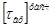
4.4, 4.5. (Измененная редакция, Изм. № 1).
5.1. Расчетные усилия в расчетных сечениях от временных вертикальных подвижных нагрузок (включая тяжеловесные транспортные средства) вычисляются расчетным путем и по результатам натурных испытаний.
5.1.1. Результаты натурных испытаний учитываются в расчете только после проведения необходимого анализа по СНиП 3.06.07-86 с целью исключения влияния различного рода облегчений в работе элементов, например, за счет нарушения подвижности опорных частей или упирания торцов балок в устои.
При относительном отклонении рассчитанного усилия от среднего, полученного по результатам натурных испытаний (вычисленного без учета погрешности измерения), более чем на 15 %, в расчет принимается усилие, полученное по результатам натурных испытаний с учетом погрешности измерения (см. пп. 5.3, 5.4), а при разнице между этими усилиями менее 15 % - большее из двух сравниваемых величин по абсолютной величине.
5.1.2. Если в конструкции имеются дефекты, искажающие расчетную схему, в которой их учесть не представляется возможным, то усилия определяются по результатам натурных испытаний с учетом погрешностей измерений (пп. 5.3, 5.4).
При анализе результатов натурных испытаний, если теоретическое расстояние Zs,stb между центрами тяжести стальной части сечения Cs и объединенного сечения Cstb, определяемое с учетом действительного класса бетона плиты на 15 % и более превосходит расстояние Zus,stb между центром тяжести и нулевой точкой эпюры относительных деформаций стальной части сечения, определяемой по закону плоскости по измеренным относительным деформациям εus1, нижнего и εus2 верхнего поясов стальной балки от испытательной нагрузки, то это свидетельствует о наличии сдвигов плиты по балке или нарушении сплошности самой плиты или бетона в стыках.
При расчетах напряжений в стальной части сечения по формулам СНиП 2.05.03-84 определение нормальной силы от временных подвижных нагрузок следует производить по формуле:
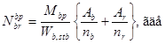
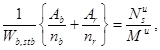
где Mu - изгибающий момент в исследуемом сечении от испытательной нагрузки, определяемый с учетом действительного распределения усилий между главными балками по результатам испытаний, Nus - нормальная сила в стальной части сечения от испытательной нагрузки, определенная по формуле:
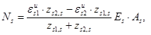
где zs1,s, zs2,s - расстояния от центра тяжести стальной части сечения до уровня расположения приборов для измерения деформаций на нижнем и верхнем поясах (εus1, εus2 принимают по абсолютной величине); Mbp - расчетный момент в том же сечении сталежелезобетонной балки от временных подвижных нагрузок, Es, Аs, Wb,stb, Ab, nb, Аr, nr - по СНиП 2.05.03-84.
5.1.1, 5.1.2. (Измененная редакция, Изм. № 1).
5.1.3. Если испытания в соответствии с п. 1.7 проводить нецелесообразно, то усилия определяются только расчетным путем с учетом дефектов, искажающих расчетную схему.
5.1.4. Временные подвижные вертикальные нагрузки необходимо устанавливать в пролетном строении в наиболее невыгодном положении как в продольном, так и в поперечном направлении.
5.1.5. При проверке возможности пропуска тяжеловесных транспортных средств по пролетному строению поперечную невыгодную установку нагрузки допускается принимать в зоне наиболее благоприятных условий ее пропуска (например, по оси проезжей части со смещением от оси в пределах 1,0 м в обе стороны и т. п.). В этом случае проезд нагрузки должен осуществляться в соответствии с указанными ограничениями.
5.2. Усилия в несущих элементах пролетного строения определяются с учетом пространственной работы конструкции, а также с учетом переменности сечений главных балок по длине пролета.
а) в опорных сечениях - упругая относительная деформация нижних поясов в уровне нижней кромки стенки, а также кривизна металлической части сечения;
б) в пролетных сечениях - упругое относительное удлинение нижних поясов в уровне нижней кромки стенки, упругая кривизна металлической части сечения; упругий прогиб балки.
5.5. Определение усилий в главных балках неразрезных пролетных строений допускается в виде произведения усилий, полученных из расчета плоской системы, на соответствующие коэффициенты поперечной установки, полученные из пространственного расчета или по результатам натурных испытаний.
5.6. Коэффициент поперечной установки для каждого расчетного сечения в двухбалочных пролетных строениях допускается определять исходя из недеформируемости контура поперечного сечения пролетного строения с учетом работы продольных связей и податливости поперечных швов сборной железобетонной плиты сдвигу. Соответствующие расчеты в этом случае производятся по рекомендуемому приложению.
5.7. Усилия в плите проезжей части многобалочных пролетных строений от временных подвижных нагрузок определяются с учетом пространственной работы сооружений.
(Введен дополнительно, Изм. № 1).
6.1. Для получения недостающих данных по расчету грузоподъемности пролетных строений производятся статические испытания, которые включают два этапа:
а) испытания для построения натурных поперечных линий влияния характерных деформаций и перемещений в расчетных сечениях главных балок, необходимых для определения усилий от вертикальных временных подвижных нагрузок;
б) испытания нагрузкой, подобранной согласно СНиП 3.06.07-86.
Для двухбалочных пролетных строений допускается оба этапа совмещать.
(Измененная редакция, Изм. № 1).
6.2. Подбор испытательной нагрузки для первого этапа испытаний производится расчетным путем с учетом данных обследования. Усилия от этой нагрузки во всех несущих элементах и соединениях не должны превосходить наибольших усилий от нагрузки второго этапа и обеспечивать надежный отсчет по приборам во всех контролируемых сечениях.
6.3. Подбор нагрузки второго этапа испытаний для каждого контролируемого сечения производится до начала испытаний, а результат затем корректируется с учетом результатов испытаний первого этапа.
6.4. Схемы продольной расстановки нагрузки для каждого контролируемого сечения должны соответствовать его максимальному загружению без перегрузки остальных контролируемых сечений несущих элементов; схемы поперечной установки должны назначаться в соответствии с «Инструкцией по определению грузоподъемности железобетонных балочных пролетных строений автодорожных мостов» ВСН 32-78 Минавтодора РСФСР.
6.5. Для обеспечения надежности результатов испытаний число повторных наездов при каждой установке испытательной нагрузки назначается в зависимости от числа дублирующих комплексов для измерения деформаций и перемещений согласно «Инструкции по определению грузоподъемности железобетонных балочных пролетных строений автодорожных мостов» ВСН 32-78 Минавтодора РСФСР.
6.6. При выборе приборов для измерения деформаций и перемещений, а также схемы их расстановки в каждом контролируемом сечении руководствуются требованиями п. 5.4 настоящей инструкции, а также требованиями «Инструкции по определению грузоподъемности железобетонных балочных пролетных строений автодорожных мостов» ВСН 32-78 Минавтодора РСФСР.
Для оценки совместной работы стали и железобетона в контролируемых сечениях кроме деформометров, необходимых для измерения соответствующих удлинений на верхних и нижних поясах стальной части, устанавливается такое же количество деформометров на нижней плоскости железобетонной плиты.
6.7. При необходимости испытания железобетонной плиты на местное загружение проводятся в соответствии с «Инструкцией по определению грузоподъемности железобетонных балочных пролетных строений автодорожных мостов» ВСН 32-70 Минавтодора РСФСР.
6.8. Испытания продольной вспомогательной балки проводятся с контролируемыми сечениями в середине панели и на опоре.
6.9. Подготовку к испытаниям, проведение испытаний и обработку данных испытаний следует осуществлять с учетом требований СНиП 3.06.07-86, а также «Инструкции по определению грузоподъемности железобетонных балочных пролетных строений автодорожных мостов» ВСН 32-78 Минавтодора РСФСР.
(Измененная редакция, Изм. № 1).
Рекомендуемое
1. СТАТИЧЕСКИЕ СХЕМЫ И РАСЧЕТНЫЕ СЕЧЕНИЯ
(Измененная редакция, Изм. № 1).
Алгоритмом охватываются:
разрезное пролетное строение с главными балками ступенчато-переменного сечения с расчетным сечением в середине пролета (рис. 1);
неразрезные пролетные строения с главными балками ступенчато-переменного сечения трех- и четырехпролетные с расчетными сечениями, указанными на рис. 2.
2. ПОПЕРЕЧНЫЕ СЕЧЕНИЯ
Поперечные сечения пролетного строения в пределах каждого участка постоянного сечения приводят к идеализированной форме, изображенной на рис. 3 со всеми обозначениями.
3. ПРОДОЛЬНЫЕ СВЯЗИ
В алгоритме учтены продольные связи:
- полураскосные (рис. 4) с отличительным признаком TS = 1;
- крестовые (рис. 5) с отличительным признаком TS = 2.
Все обозначения и размеры указаны на рис. 4. 5.
Рис. 1. Разрезное пролетное строение с главными балками ступенчатопеременного сечения и расчетным сечением в середине пролета
Рис. 2. Неразрезные пролетные строения с главными балками ступенчатопеременного сечения трех- и четырехпролетные.
Рис. 3. Идеализированное поперечное сечение пролетного строения
Рис. 4. Полураскосные продольные связи
Рис. 5. Крестовые продольные связи
4. БЛОК-СХЕМА
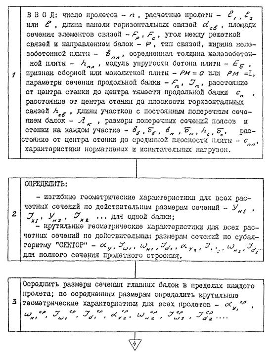
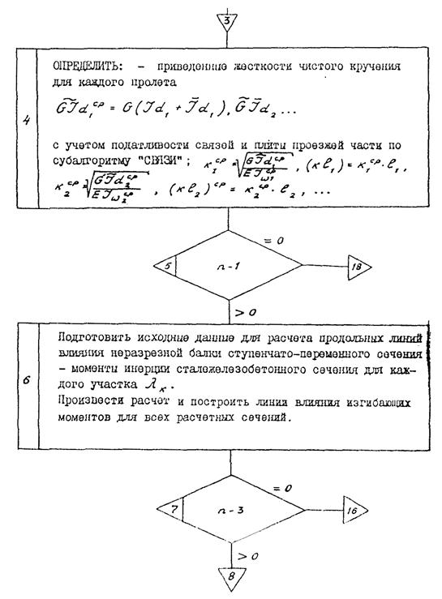
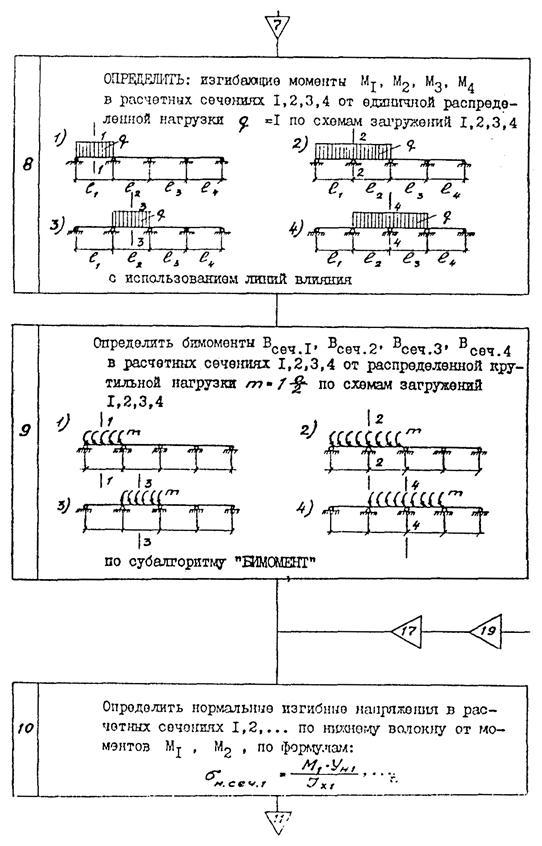
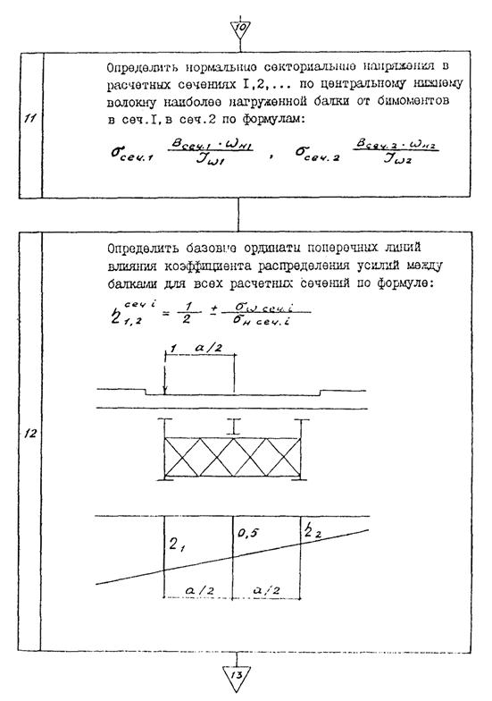
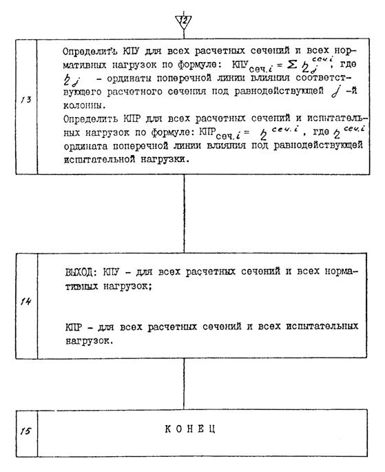
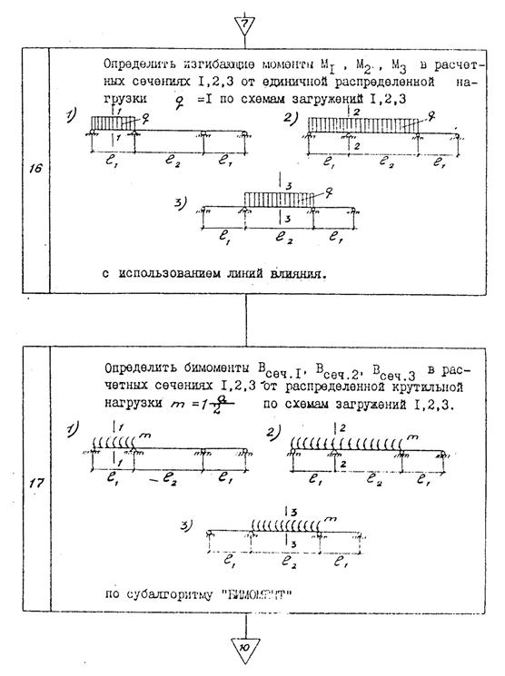
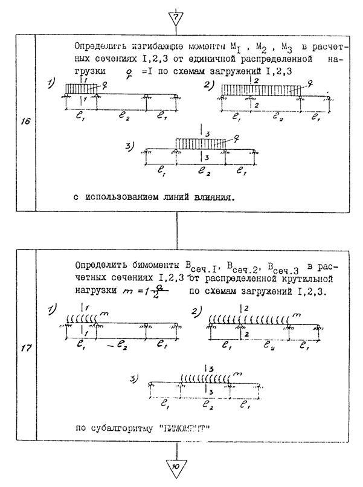
5. БЛОК-СХЕМА
субалгоритма «СЕКТОР» определения положения центра изгиба сечения по вертикали - aу, секториальной координаты сечения по центральному нижнему волокну - wн, главного секториального момента инерции Jw, момента инерции чистого кручения Jd для тонкостенного стержня п-образного профиля.
Обозначения даны на рис.3.
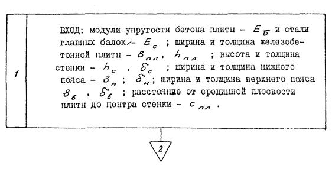
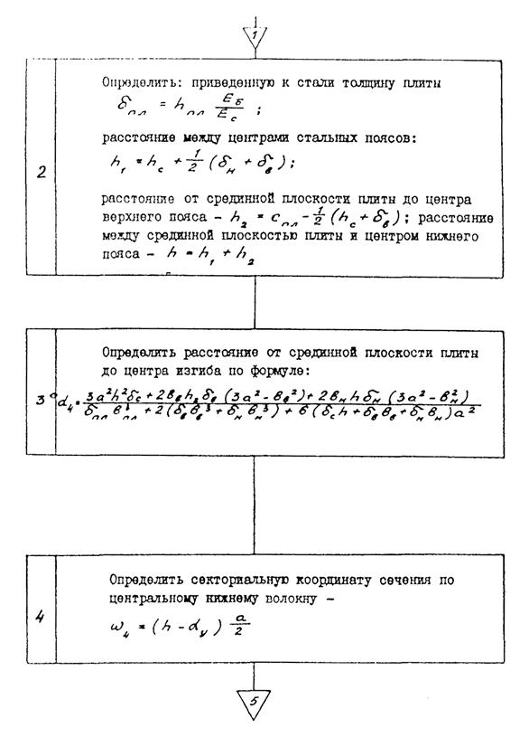
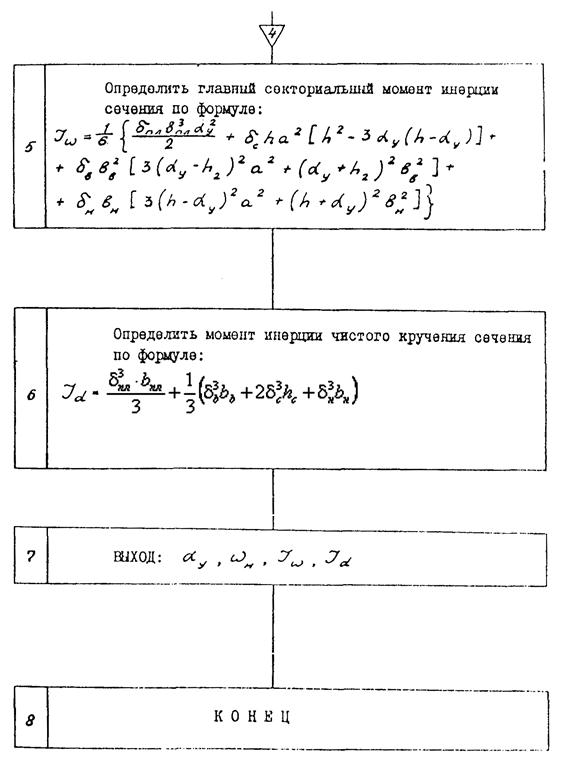
Блок 6. (Измененная редакция, Изм. № 1).
6. БЛОК-СХЕМА
субалгоритма «СВЯЗИ» определения приведенной жесткости чистого кручения с учетом податливости связей и плиты проезжей части.
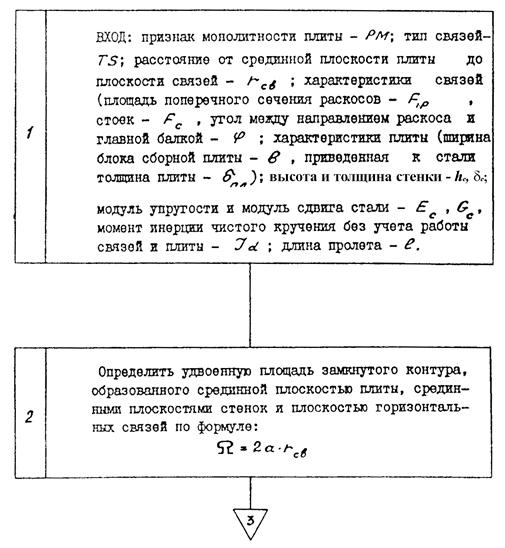
Блок 1. (Измененная редакция, Изм. № 1).
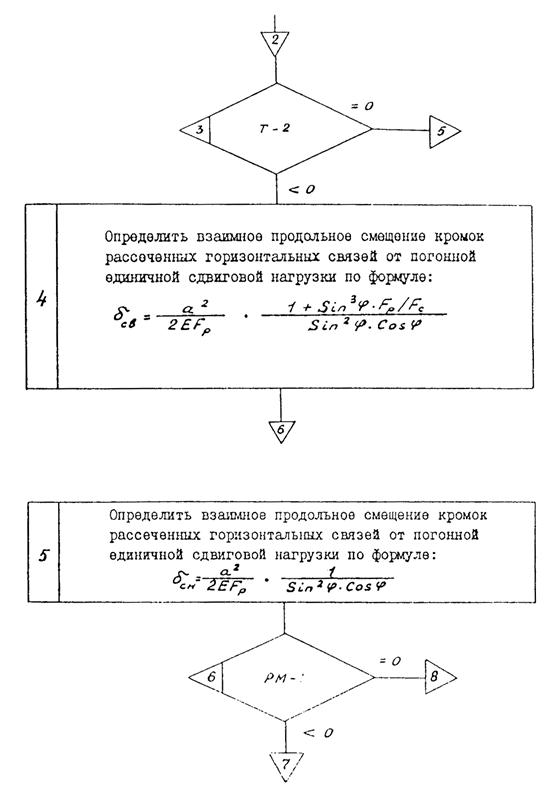
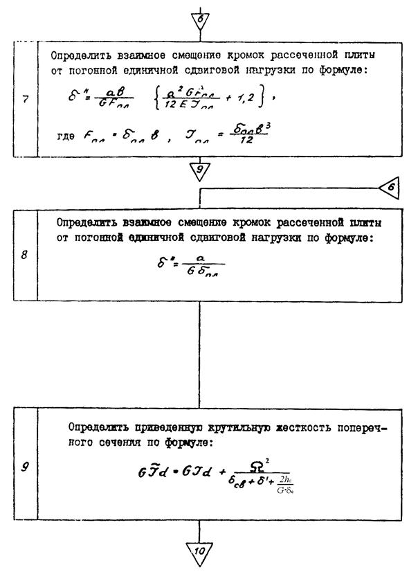
Блоки 8, 9. (Измененная редакция, Изм. № 1).
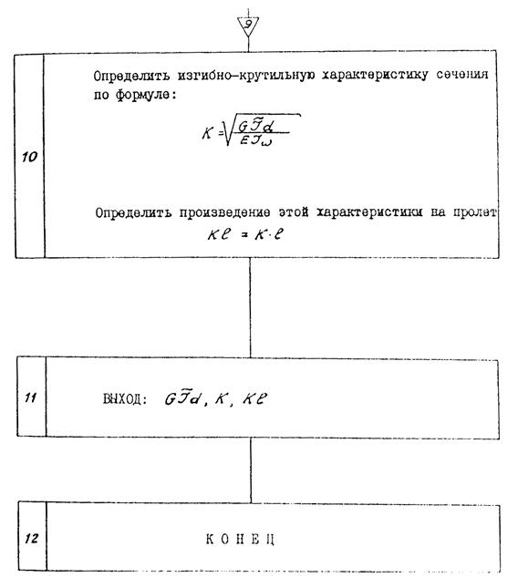
7. БЛОК-СХЕМА
Субалгоритма «БИМОМЕНТ» определения бимоментов в расчетных сечениях неразрезного сталежелезобетонного двухбалочного пролетного строения с постоянным поперечным сечением в каждом пролете от равномерно распределенной крутильной нагрузки.
7.1. ОБОЗНАЧЕНИЯ
n - число пролетов;
j = 1, 2, 3; j = 1, 2, 3, 4 - номера расчетных сечений;
N - число расчетных сечений;
K1l1, K2l2, K1, K2, Jw 1, Jw 2 - изгибно-крутильные характеристики в пролетах l1, l2;
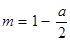
а - расстояние между осями балок в поперечном сечении пролетного строения.
Положение расчетных сечений и обозначения пролетов - на рис. 1; рис. 2.
7.2. БЛОК-СХЕМА
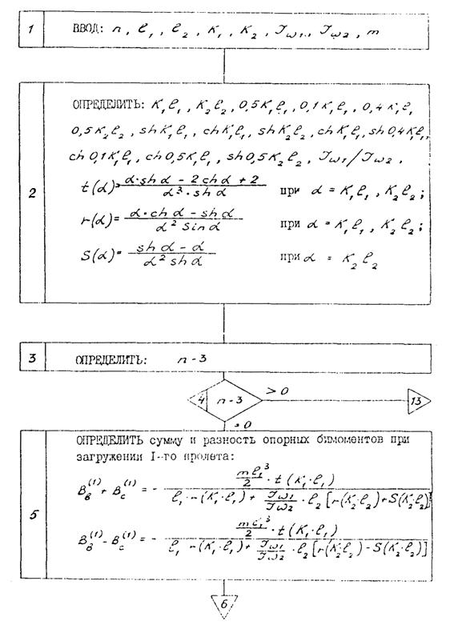
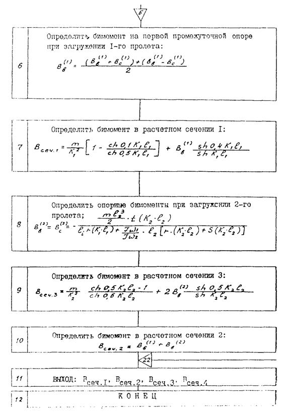
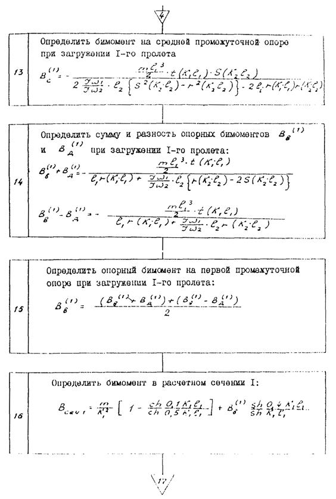
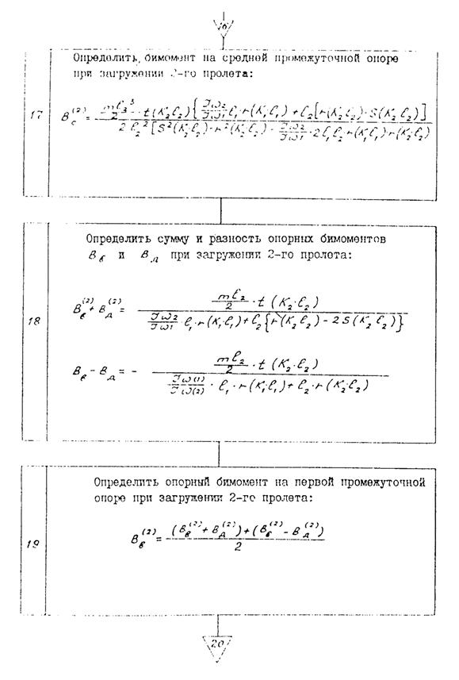
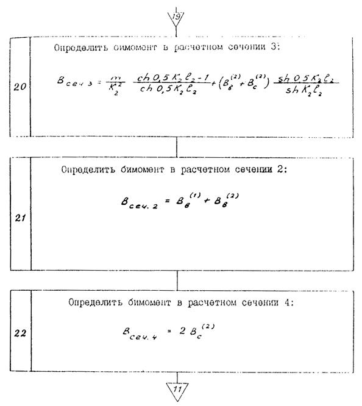
СОДЕРЖАНИЕ